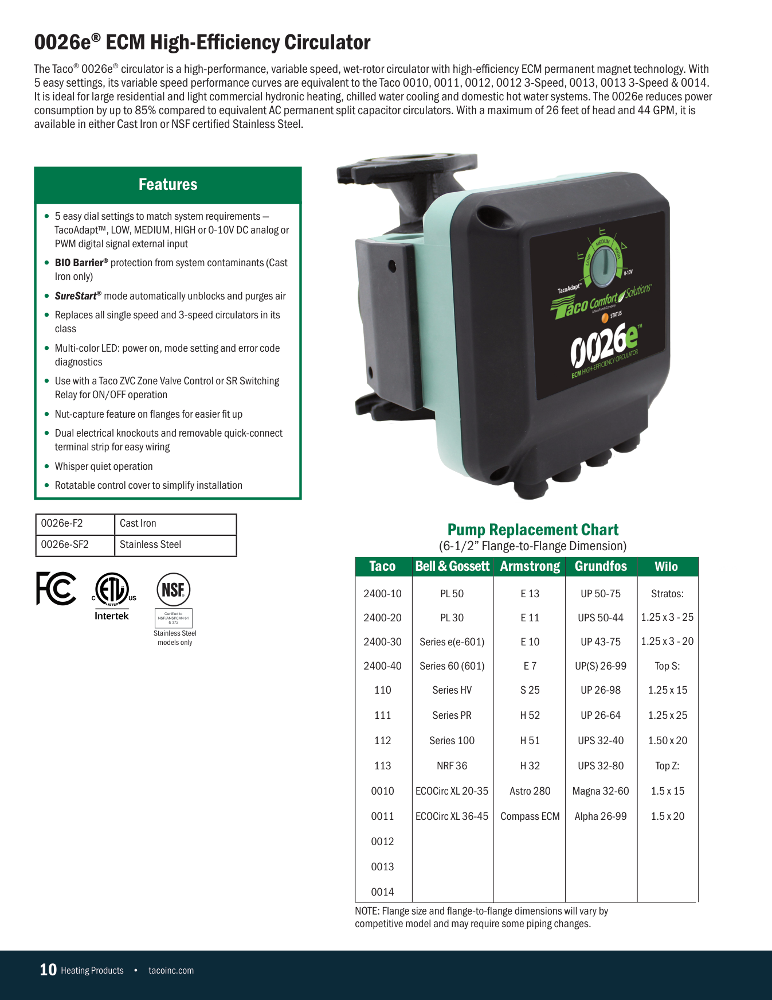

Wet-rotor ECM circulator. Two variants sharing one pump body: the cast iron flanged (F2) and the stainless flanged (SF2). Same geometry, different material and finish.
2 variants Catalog p.10 Cast iron + stainless
This is our current VNTANA asset for the lead variant. Use it as the geometry, scale, and material reference for your rebuild. Below it is the source CAD download and the full variant list.
Work from the Optimized GLB in the shared VNTANA collection, not the STEP. VNTANA has already converted each CAD (Convert Only, Pivot None, Draco off), so the GLB is a clean, straight conversion of the source geometry.
Your scope on the GLB: open it in Blender, UV map, minor mesh cleanup, then create and apply the materials. That is the whole job. Do not rebuild or re-model from the STEP.
| SKU | Body | Connection | VNTANA reference |
|---|---|---|---|
| 0026e-F2 | Cast iron | Flanged | View 3D Platform ↗ |
| 0026e-SF2 | Stainless | Flanged | View 3D Platform ↗ |
Catalog specifications (page 10) and the reference photography. Match the physical proportions and finishes to these, not to your own interpretation.
Additional product photography, including back and detail views, is on Taco's own product page. Use it as supporting reference alongside the catalog. Where a web photo conflicts with the catalog, the catalog is the source of truth.

| Component | Material |
|---|---|
| Casing | Cast iron (cast-iron variants) or 304 stainless steel (stainless variants) |
| Impeller (101) | PES GF-30 (glass-filled polymer) |
| Shaft (122) | ANSI 420 stainless |
| Bearing | Carbon sleeve |
| Motor housing / cover | ECM housing, Taco green |
| Faceplate / labels | Printed artwork (deliver as texture, not geometry) |
When the family is built, self-QA against this checklist first, then upload to the VNTANA platform as a Draft and notify VNTANA for review. Do not mark anything final. VNTANA does the final approval.
Use VNTANA’s shared toolkit so cameras, lighting, and the render environment are identical on every asset. Always download the latest version.
Track this SKU’s delivery status and material sign-off in the shared delivery tracker (Google Sheet).